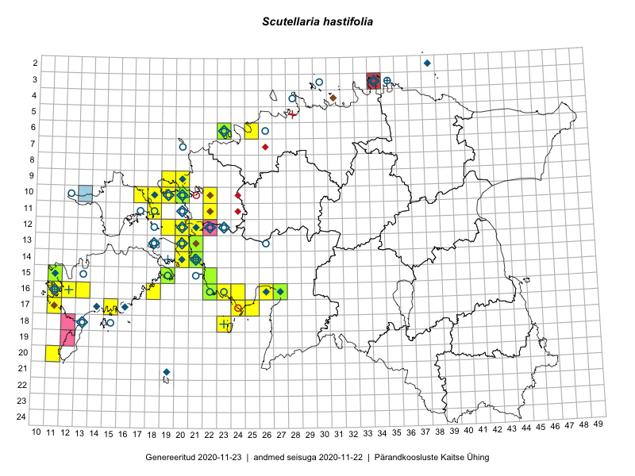

Scutellaria hastifolia — odalehine tihashein
Lamiaceae :: Scutellaria hastifolia L. (201)

Kaart põhineb 230 kirjel:
vaatlusi 102
herbaareksemplare 99
PKÜ kirjeid1 24
ELFi kirjeid2 4
LVA kirjeid3 1
Taime kaasaegsed ja ajaloolised leiukohad asuvad 63 ruudus.
Tingmärgid ja leidudega ruutude arvud periooditi uues (u) ja 2005 andmestikus (v)
| █ | vahemik | u4 | v5 |
|---|---|---|---|
| █ | 2006–2020 | 41 | – |
| ◆/◇ | 1971–2005 | 29 | 35 |
| ○ | 1921–1970 | 29 | 14 |
| + | kuni 1920 | 6 | 3 |
| × | hävinud | – | 0 |
| ? | kaheldav | – | 0 |
| Ruut | Leidja(d) | Leiuaeg | Kirje |
|---|---|---|---|
| 16-22 | Peedu Saar | 2020-08-31 | punkt: Scutellaria hastifolia L. |
| 16-22 | Peedu Saar | 2020-08-31 | ruut/ala: Scutellaria hastifolia L. |
| 16-22 | Peedu Saar | 2020-08-31 | PKÜ: 20656 |
| 16-22 | Ott Luuk, Meeli Mesipuu | 2020-08-31 | PKÜ: 20687 |
| 16-22 | Ott Luuk | 2020-08-31 | TAA0154207: Scutellaria hastifolia L. |
| 16-11 | Meeli Mesipuu | 2020-08-15 | PKÜ: 21046 |
| 17-11 | Rein Kalamees, Ott Luuk | 2020-07-03 | PKÜ: 20455 |
| 19-12 | Toomas Kukk | 2020-07-02 | PKÜ: 20529 |
| 19-12 | Toomas Kukk | 2020-07-02 | PKÜ: 20541 |
| 19-12 | Toomas Kukk | 2020-07-02 | PKÜ: 20527 |
| 17-15 | Sirje Azarov, Mari Reitalu | 2020-07-02 | ruut/ala: Scutellaria hastifolia L. |
| 17-11 | Ott Luuk, Rein Kalamees | 2020-07-02 | punkt: Scutellaria hastifolia L. |
| 17-11 | Ott Luuk, Rein Kalamees | 2020-07-02 | PKÜ: 21172 |
| 17-11 | Ott Luuk, Rein Kalamees | 2020-07-02 | PKÜ: 21176 |
| 17-11 | Meeli Mesipuu | 2020-07-02 | PKÜ: 21277 |
| 13-21 | Ott Luuk, Toomas Kukk, Thea Kull | 2019-06-25 | ruut/ala: Scutellaria hastifolia L. |
| 13-21 | Ott Luuk, Toomas Kukk, Thea Kull | 2019-06-25 | TAA0150103: Scutellaria hastifolia L. |
| 10-17 | Toomas Kukk | 2018-07-10 | ruut/ala: Scutellaria hastifolia L. |
| 11-18 | Toomas Kukk | 2018-07-09 | ruut/ala: Scutellaria hastifolia L. |
| 11-18 | Toomas Kukk | 2018-07-09 | punkt: Scutellaria hastifolia L. |
| 10-18 | Peedu Saar | 2018-07-09 | ruut/ala: Scutellaria hastifolia L. |
| 12-19 | Toomas Kukk, Ilmar Uibopuu, Mari Reitalu | 2018-05-27 | ruut/ala: Scutellaria hastifolia L. |
| 16-23 | Indrek Tammekänd, Eike Tammekänd | 2017-07-20 | ruut/ala: Scutellaria hastifolia L. |
| 18-23 | Mari Reitalu, Sirje Azarov, Ester Valdvee, Triin Reitalu | 2017-07-11–2017-07-13 | ruut/ala: Scutellaria hastifolia L. |
| 16-18 | Mari Reitalu, Sirje Azarov | 2016-08-08 | ruut/ala: Scutellaria hastifolia L. |
| 10-22 | Sirje Azarov, Oliver Parrest | 2016-07-07 | ruut/ala: Scutellaria hastifolia L. |
| 11-22 | Sirje Azarov, Oliver Parrest | 2016-07-07 | ruut/ala: Scutellaria hastifolia L. |
| 10-20 | Peedu Saar, Timo Luhamäe | 2016-07-07 | TAA0133098: Scutellaria hastifolia L. |
| 17-25 | Tiit Hallikma, Tõnu Ploompuu | 2016-07-06 | ruut/ala: Scutellaria hastifolia L. |
| 16-27 | Indrek Tammekänd | 2016-07-06 | TAA0139795: Scutellaria hastifolia L. |
| 15-19 | Mari Reitalu, Triin Reitalu | 2016-06-30 | ruut/ala: Scutellaria hastifolia L. |
| 06-23 | Kaie Eha | 2016-06-21 | TALL C010327: Scutellaria hastifolia L. |
| 12-20 | Meeli Mesipuu, Maret Gerz | 2015-08-26 | PKÜ: 18653 |
| 12-20 | Meeli Mesipuu, Maret Gerz | 2015-08-25 | ruut/ala: Scutellaria hastifolia L. |
| 17-24 | Maret Gerz, Leena Gerz | 2015-08-12 | ruut/ala: Scutellaria hastifolia L. |
| 16-24 | Maret Gerz, Leena Gerz | 2015-08-09 | ruut/ala: Scutellaria hastifolia L. |
| 06-23 | Tõnu Ploompuu | 2015-08-04 | TALL C008771: Scutellaria hastifolia L. |
| 06-25 | Mari Metsoja, Jaak-Albert Metsoja | 2015-07-25 | ruut/ala: Scutellaria hastifolia L. |
| 16-13 | Sirje Azarov, Aira Alasi | 2015-07-20 | ruut/ala: Scutellaria hastifolia L. |
| 13-20 | Peedu Saar, Elle Roosaluste | 2015-07-12 | ruut/ala: Scutellaria hastifolia L. |
| 16-12 | Mari Reitalu | 2015-07-08 | ruut/ala: Scutellaria hastifolia L. |
| 15-11 | Ott Luuk | 2015-07-01 | punkt: Scutellaria hastifolia L. |
| 15-11 | Ott Luuk | 2015-07-01 | TAA0144847: Scutellaria hastifolia L. |
| 14-20 | Meeli Mesipuu, Kadri Tali | 2015-06-26 | ruut/ala: Scutellaria hastifolia L. |
| 09-20 | Kadi-Liis Kesler | 2015-06-25–2015-10-11 | ruut/ala: Scutellaria hastifolia L. |
| 15-19 | Meeli Mesipuu | 2015-06-21 | ruut/ala: Scutellaria hastifolia L. |
| 15-19 | Meeli Mesipuu | 2015-06-21 | punkt: Scutellaria hastifolia L. |
| 16-26 | Meeli Mesipuu | 2015-06-19 | ruut/ala: Scutellaria hastifolia L. |
| 20-11 | Mari Reitalu, Triin Reitalu | 2014-08-15–2014-08-17 | ruut/ala: Scutellaria hastifolia L. |
| 10-20 | Ott Luuk, Peedu Saar | 2014-07-29 | PKÜ: 18112 |
| 12-20 | Ott Luuk | 2014-07-27 | punkt: Scutellaria hastifolia L. |
| 12-20 | Ott Luuk | 2014-07-24–2014-07-28 | ruut/ala: Scutellaria hastifolia L. |
| 14-21 | Ott Luuk | 2014-07-02 | TAA0137938: Scutellaria hastifolia L. |
| 15-11 | Mari Reitalu | 2010-09-01 | ELF: 16463 |
| 17-11 | Mari Reitalu | 2010-06-28 | ELF: 16331 |
| 18-12 | Meeli Mesipuu | 2009-08-17 | PKÜ: 15310 |
| 03-34 | Ireen Trummer | 2009-08-15 | LVA: -2061350433 |
| 15-19 | J.-M. Habicht | 2009-07-15 | TAM0015827: Scutellaria hastifolia L. |
| 10-13 | Elle Roosaluste | 2009-07-15 | ELF: 12001 |
| 12-22 | Meeli Mesipuu, Bert Holm | 2008-08-23 | PKÜ: 14766 |
| 12-21 | Mare Toom, Kai Vellak, Aveliina Helm, I. Tool, Martin Silts | 2008-07-07 | punkt: Scutellaria hastifolia L. |
| 13-21 | Toomas Kukk | 2008-07-04 | ruut/ala: Scutellaria hastifolia L. |
| 13-21 | Toomas Kukk | 2008-07-04 | TAA0112393: Scutellaria hastifolia L. |
| 09-19 | Mari Reitalu | 2007-07-26 | ruut/ala: Scutellaria hastifolia L. |
| 10-19 | Toomas Kukk, Mari Reitalu, Mare Leis | 2007-07-25 | ruut/ala: Scutellaria hastifolia L. |
| 10-19 | Toomas Kukk, Mari Reitalu, Mare Leis | 2007-07-25 | ruut/ala: Scutellaria hastifolia L. |
| 09-19 | Mari Reitalu, Mare Leis | 2007-07-23 | ruut/ala: Scutellaria hastifolia L. |
| 09-19 | Mari Reitalu, Mare Leis | 2007-07-23 | punkt: Scutellaria hastifolia L. |
| 16-11 | Mari Reitalu | 2007-06-14 | ruut/ala: Scutellaria hastifolia L. |
| 16-22 | Meeli Mesipuu, Erki Uustalu | 2006-08-23 | PKÜ: 12645 |
| 17-24 | Virve Sõber, Meeli Mesipuu, Helen Toom | 2006-08-01 | PKÜ: 12791 |
| 15-22 | Toomas Kukk, Alexander Nikolaevitsch Sennikov | 2006-07-11 | ruut/ala: Scutellaria hastifolia L. |
| 15-22 | Meeli Mesipuu, Karin Kikas | 2006-06-22 | TAA0084622: Scutellaria hastifolia L. |
| 15-22 | Meeli Mesipuu, Karin Kikas | 2006-06-22 | PKÜ: 13462 |
| 14-21 | Toomas Kukk | 2005-07-01 | TAA0084617: Scutellaria hastifolia L. |
| 10-20 | Tõnu Ploompuu | 2003-08-06–2003-08-09 | ruut/ala: Scutellaria hastifolia L. |
| 17-16 | Tõnu Ploompuu | 2001 | punkt: Scutellaria hastifolia L. |
| 04-31 | Mari Tobias, Laimi Truus | 2000-08-15 | PKÜ: 3692 |
| 12-23 | Tõnu Ploompuu | 2000-07-10–2000-07-15 | ruut/ala: Scutellaria hastifolia L. |
| 11-22 | Merit Otsus, Kadri Tali | 1999-10-03 | PKÜ: 344 |
| 14-21 | Heikki Luhamaa, Malle Leht | 1999-09-11 | PKÜ: 299 |
| 03-34 | Toomas Kukk, Rein Kalamees | 1999-09-06–1999-09-07 | ruut/ala: Scutellaria hastifolia L. |
| 13-21 | Reelika Rohtla, Erki Uustalu, Malle Leht | 1999-08-17 | PKÜ: 6 |
| 10-22 | Tõnu Ploompuu | 1999-07-31 | PKÜ: 894 |
| 17-11 | Anneli Palo | 1999-07-02 | PKÜ: 1576 |
| 14-20 | Toomas Kukk | 1999-06-16 | ruut/ala: Scutellaria hastifolia L. |
| 14-20 | Toomas Kukk | 1999-06-16 | PKÜ: 6968 |
| 16-27 | Toomas Kukk | 1998-07-05–1998-07-08 | ruut/ala: Scutellaria hastifolia L. |
| 13-20 | Tiiu Kull, Vilma Kuusk | 1998-06-25–1998-06-27 | ruut/ala: Scutellaria hastifolia L. |
| 09-20 | Ülle Püttsepp, Erki Uustalu | 1997-09-23 | ELF: 275 |
| 16-26 | V. Kuusk | 1997–1998 | ruut/ala: Scutellaria hastifolia L. |
| 09-20 | Toomas Kukk, Elle Roosaluste | 1996-07-19 | ruut/ala: Scutellaria hastifolia L. |
| 10-19 | Toomas Kukk, Elle Roosaluste | 1994-07-16–1997-08-16 | ruut/ala: Scutellaria hastifolia L. |
| 10-19 | Toomas Kukk, Elle Roosaluste | 1994-07-16 | ruut/ala: Scutellaria hastifolia L. |
| 10-18 | Toomas Kukk, Elle Roosaluste | 1993-08-25–1996-07-17 | ruut/ala: Scutellaria hastifolia L. |
| 10-20 | Toomas Kukk, Elle Roosaluste | 1993-07-16–1994-07-13 | ruut/ala: Scutellaria hastifolia L. |
| 10-20 | Toomas Kukk, Elle Roosaluste | 1993-07-16–1994-05-24 | ruut/ala: Scutellaria hastifolia L. |
| 10-19 | Toomas Kukk | 1993-07-05 | TAA0084615: Scutellaria hastifolia L. |
| 10-20 | Elle Roosaluste | 1993-06-29 | ruut/ala: Scutellaria hastifolia L. |
| 10-19 | Toomas Kukk, Elle Roosaluste | 1993-06-27–1996-07-15 | ruut/ala: Scutellaria hastifolia L. |
| 10-19 | Toomas Kukk, Elle Roosaluste, Mare Leis, Thea Kull | 1993-06–1998-09-21 | ruut/ala: Scutellaria hastifolia L. |
| 10-19 | Toomas Kukk, Elle Roosaluste | 1993-06–1998-05-31 | ruut/ala: Scutellaria hastifolia L. |
| 06-23 | Tõnu Ploompuu | 1992–1999 | ruut/ala: Scutellaria hastifolia L. |
| 03-34 | Toomas Kukk | 1991-07-14 | TAA0084614: Scutellaria hastifolia L. |
| 03-34 | Toomas Kukk, Rein Kalamees | 1991-05-29–1991-07-16 | ruut/ala: Scutellaria hastifolia L. |
| 13-18 | M. Leht, M. Abakumova | 1983-08-23 | ruut/ala: Scutellaria hastifolia L. |
| 12-20 | 1983-07-13 | ruut/ala: Scutellaria hastifolia L. | |
| 11-20 | H.-E. Rebassoo | 1983-06-29 | ruut/ala: Scutellaria hastifolia L. |
| 09-20 | V. Kuusk | 1981-07-07 | TAA0084635: Scutellaria hastifolia L. |
| 09-20 | Maret Kask, Heljo Krall, Vilma Kuusk, Malle Leht, Liivia Laasimer, Tiina Ksenofontova, Linda Viljasoo | 1981-07-07 | ruut/ala: Scutellaria hastifolia L. |
| 15-11 | M. Kask | 1980-08-07 | TAA0084606: Scutellaria hastifolia L. |
| 15-11 | M. Kask, L. Viljasoo, A. Frey, A. Toomel | 1980-08 | ruut/ala: Scutellaria hastifolia L. |
| 12-21 | H. Krall | 1980-06–1980-07 | ruut/ala: Scutellaria hastifolia L. |
| 14-21 | V. Kuusk | 1980-06 | ruut/ala: Scutellaria hastifolia L. |
| 21-19 | Haide-Ene Rebassoo | 1979-07-02–1979-07-05 | ruut/ala: Scutellaria hastifolia L. |
| 12-22 | H. Krall | 1979–1980 | ruut/ala: Scutellaria hastifolia L. |
| 12-20 | H.-E. Rebassoo | 1977-07-22 | ruut/ala: Scutellaria hastifolia L. |
| 11-20 | G. Isotamm | 1973-06-30 | TAA0084655: Scutellaria hastifolia L. |
| 17-16 | V. Kuusk | 1973-06-28 | TAA0084636: Scutellaria hastifolia L. |
| 18-13 | L. Viljasoo | 1973-06-20 | TAA0084654: Scutellaria hastifolia L. |
| 17-16 | V. Kuusk | 1973-06 | ruut/ala: Scutellaria hastifolia L. |
| 17-14 | Liivia Laasimer | 1972-07-11 | TAA0084634: Scutellaria hastifolia L. |
| 02-38 | Haide-Ene Rebassoo | 1972-06-29 | ruut/ala: Scutellaria hastifolia L. |
| 16-11 | Mari Reitalu | 1972–2005 | ruut/ala: Scutellaria hastifolia L. |
| 14-21 | Õie Jaagomäe | 1971-06-25 | TAM0023821: Scutellaria hastifolia L. |
| 14-21 | E. Peikel | 1971-06-25 | TAM0023819: Scutellaria hastifolia L. |
| 14-21 | E. Peikel | 1971-06-25 | TAM0023820: Scutellaria hastifolia L. |
| 16-11 | Haide-Ene Rebassoo | 1969-07-30 | ruut/ala: Scutellaria hastifolia L. |
| 10-19 | Haide-Ene Rebassoo | 1969-06-10 | ruut/ala: Scutellaria hastifolia L. |
| 15-19 | H.-E. Rebassoo | 1968 | ruut/ala: Scutellaria hastifolia L. |
| 12-20 | H.-E. Rebassoo | 1966-08-12 | ruut/ala: Scutellaria hastifolia L. |
| 13-26 | V. Kuusk | 1964-07-08 | TAA0084656: Scutellaria hastifolia L. |
| 16-11 | L. Viljasoo | 1964-06-24 | TAA0084633: Scutellaria hastifolia L. |
| 16-23 | V. Kuusk | 1962-07-27 | TAA0084618: Scutellaria hastifolia L. |
| 16-22 | V. Puusepp | 1962-07-26 | TAA0084609: Scutellaria hastifolia L. |
| 14-21 | A. Ojaveer | 1961-09-06 | TAA0084611: Scutellaria hastifolia L. |
| 11-20 | E. Lellep | 1961-08-04 | ruut/ala: Scutellaria hastifolia L. |
| 13-20 | E. Lellep | 1961-07-31 | ruut/ala: Scutellaria hastifolia L. |
| 12-20 | E. Lellep | 1961-07-30 | ruut/ala: Scutellaria hastifolia L. |
| 14-21 | M. Kask | 1961-06-12 | TAA0084610: Scutellaria hastifolia L. |
| 06-23 | S. Talts, L. Viljasoo | 1960-07-14 | TAA0084653: Scutellaria hastifolia L. |
| 16-11 | M. Kask | 1959-07-20 | TAA0084612: Scutellaria hastifolia L. |
| 16-11 | K. Pork | 1959-06-24 | TAA0084632: Scutellaria hastifolia L. |
| 14-21 | M. Kask | 1958-10-09 | TAA0084613: Scutellaria hastifolia L. |
| 14-21 | H. Karu | 1958-07-10 | TAA0084627: Scutellaria hastifolia L. |
| 18-13 | V. Kuusk | 1958-07-07 | TAA0084631: Scutellaria hastifolia L. |
| 14-21 | A. Ojaveer | 1957-06-27 | TAA0084630: Scutellaria hastifolia L. |
| 10-12 | Haide-Ene Rebassoo | 1957–1984 | ruut/ala: Scutellaria hastifolia L. |
| 11-17 | Haide-Ene Rebassoo | 1957–1984 | ruut/ala: Scutellaria hastifolia L. |
| 11-18 | Haide-Ene Rebassoo | 1957–1984 | ruut/ala: Scutellaria hastifolia L. |
| 12-18 | Haide-Ene Rebassoo | 1957–1984 | ruut/ala: Scutellaria hastifolia L. |
| 12-18 | H. Rebassoo | 1957–1972 | ruut/ala: Scutellaria hastifolia L. |
| 14-21 | 1957–1960 | ruut/ala: Scutellaria hastifolia L. | |
| 14-21 | E. Paade | 1957 | ruut/ala: Scutellaria hastifolia L. |
| 12-23 | V. Hein | 1956-06-28 | TAA0084629: Scutellaria hastifolia L. |
| 12-18 | M. Kask | 1956-06-23 | TAA0084628: Scutellaria hastifolia L. |
| 06-23 | Haide-Ene Rebassoo, K. Kalamees | 1955-07-16–1955-07-17 | ruut/ala: Scutellaria hastifolia L. |
| 14-21 | M. Kask | 1949-08-27 | TAA0084623: Scutellaria hastifolia L. |
| 14-21 | M. Kask | 1949-08-27 | TAA0084624: Scutellaria hastifolia L. |
| 14-21 | M. Kask | 1949-08-25 | TAA0084625: Scutellaria hastifolia L. |
| 14-21 | M. Kask | 1949-08-25 | TAA0084626: Scutellaria hastifolia L. |
| 14-21 | S. Talts | 1949-07-20 | TAA0084616: Scutellaria hastifolia L. |
| 03-30 | G. Vilbaste | 1948-07-12 | TAM0052688: Scutellaria hastifolia L. |
| 03-30 | G. Vilbaste | 1948-07-10 | TAM0052690: Scutellaria hastifolia L. |
| 10-20 | Gustav Vilbaste | 1939-06-05 | TAA0084645: Scutellaria hastifolia L. |
| 06-26 | Elsa Pastak | 1936-07-01 | TAA0084619: Scutellaria hastifolia L. |
| 06-26 | Elsa Pastak | 1936-07-01 | TAA0084620: Scutellaria hastifolia L. |
| 06-26 | Elsa Pastak | 1936-07-01 | TAA0084621: Scutellaria hastifolia L. |
| 15-13 | Gustav Vilbaste | 1936-06-19 | TAA0084646: Scutellaria hastifolia L. |
| 03-35 | J. Eplik | 1935-06 | ruut/ala: Scutellaria hastifolia L. |
| 12-18 | Gustav Vilbaste | 1934-08-16 | TAA0084647: Scutellaria hastifolia L. |
| 11-20 | Gustav Vilbaste | 1934-07-06 | TAA0084639: Scutellaria hastifolia L. |
| 11-20 | Gustav Vilbaste | 1934-07-06 | TAA0084640: Scutellaria hastifolia L. |
| 10-20 | Gustav Vilbaste | 1934-07-04 | TAA0084643: Scutellaria hastifolia L. |
| 10-20 | Gustav Vilbaste | 1934-07-04 | TAA0084644: Scutellaria hastifolia L. |
| 12-23 | E. Sits | 1934–1936 | ruut/ala: Scutellaria hastifolia L. |
| 12-22 | E. Sits | 1934 | ruut/ala: Scutellaria hastifolia L. |
| 13-18 | A. Tomson | 1934 | ruut/ala: Scutellaria hastifolia L. |
| 15-21 | Gustav Vilbaste | 1933-07-10 | TAA0084648: Scutellaria hastifolia L. |
| 14-21 | Gustav Vilbaste | 1933-07-09 | TAA0084649: Scutellaria hastifolia L. |
| 12-23 | E. Sits | 1933-06-28 | TAM0052689: Scutellaria hastifolia L. |
| 03-35 | Gustav Vilbaste | 1933 | ruut/ala: Scutellaria hastifolia L. |
| 11-20 | Jaak Ruubel | 1932-07-21 | TAM0129413: Scutellaria hastifolia L. |
| 18-15 | 1932–1972 | ruut/ala: Scutellaria hastifolia L. | |
| 12-18 | Gustav Vilbaste | 1930-07-08 | TAA0084637: Scutellaria hastifolia L. |
| 12-18 | Gustav Vilbaste | 1930-07-08 | TAA0084638: Scutellaria hastifolia L. |
| 12-18 | Gustav Vilbaste | 1930-07-08 | TAA0084650: Scutellaria hastifolia L. |
| 07-20 | Gustav Vilbaste | 1930–1939 | ruut/ala: Scutellaria hastifolia L. |
| 11-20 | Gustav Vilbaste | 1930–1939 | ruut/ala: Scutellaria hastifolia L. |
| 10-20 | Gustav Vilbaste | 1930–1939 | ruut/ala: Scutellaria hastifolia L. |
| 04-28 | Gustav Vilbaste | 1930–1939 | punkt: Scutellaria hastifolia L. |
| 03-35 | Gustav Vilbaste | 1930–1939 | ruut/ala: Scutellaria hastifolia L. |
| 11-20 | G. Vilbaste | 1930–1939 | ruut/ala: Scutellaria hastifolia L. |
| 18-15 | Stange | 1928-07-22 | TAA0117834: Scutellaria hastifolia L. |
| 03-34 | Gustav Vilberg | 1927-08-05 | TAA0084642: Scutellaria hastifolia L. |
| 03-34 | Gustav Vilbaste | 1927-08-05 | TAA0084652: Scutellaria hastifolia L. |
| 03-34 | Gustav Vilberg | 1927-08-04 | TAA0084641: Scutellaria hastifolia L. |
| 14-21 | 1924-07-17 | TAM0052687: Scutellaria hastifolia L. | |
| 03-35 | R. Lehbert | 1921-08-02 | TAM0067427: Scutellaria hastifolia L. |
| 03-35 | R. Lehbert | 1921-08-02 | TAM0067428: Scutellaria hastifolia L. |
| 03-35 | R. Lehbert | 1921-08-02 | TAM0067429: Scutellaria hastifolia L. |
| 03-35 | R. Lehbert | 1921-08-02 | TAM0067430: Scutellaria hastifolia L. |
| 03-35 | R. Lehbert | 1921-08-02 | TAM0067434: Scutellaria hastifolia L. |
| 03-35 | R. Lehbert | 1921-08-02 | TAM0067435: Scutellaria hastifolia L. |
| 03-35 | R. Lehbert | 1921-08-02 | TAM0067436: Scutellaria hastifolia L. |
| 03-35 | R. Lehbert | 1921-08-02 | TAM0067438: Scutellaria hastifolia L. |
| 14-21 | R. Lehbert | 1912-07-06 | TAM0060179: Scutellaria hastifolia L. |
| 14-21 | R. Lehbert | 1912-07-06 | TAM0060180: Scutellaria hastifolia L. |
| 03-35 | R. Lehbert | 1910-07-12 | TAM0060177: Scutellaria hastifolia L. |
| 03-35 | R. Lehbert | 1910-07-12 | TAM0060419: Scutellaria hastifolia L. |
| 03-35 | R. Lehbert | 1910-07-12 | TAM0060420: Scutellaria hastifolia L. |
| 03-35 | R. Lehbert | 1910-07-12 | TAM0060421: Scutellaria hastifolia L. |
| 03-35 | R. Lehbert | 1910-07-12 | TAM0060422: Scutellaria hastifolia L. |
| 03-35 | 1909-07-17 | TAM0066307: Scutellaria hastifolia L. | |
| 03-35 | 1909-07-17 | TAM0066308: Scutellaria hastifolia L. | |
| 03-35 | R. Lehbert | 1908-08-17 | TAM0060175: Scutellaria hastifolia L. |
| 03-35 | R. Lehbert | 1908-08-17 | TAM0060414: Scutellaria hastifolia L. |
| 03-35 | R. Lehbert | 1908-08-17 | TAM0060415: Scutellaria hastifolia L. |
| 03-35 | R. Lehbert | 1908-08-17 | TAM0060416: Scutellaria hastifolia L. |
| 03-35 | R. Lehbert | 1908-08-17 | TAM0060417: Scutellaria hastifolia L. |
| 03-35 | R. Lehbert | 1908-08-17 | TAM0060471: Scutellaria hastifolia L. |
| 03-35 | R. Lehbert | 1908-07-11 | TAM0060172: Scutellaria hastifolia L. |
| 03-35 | R. Lehbert | 1908-07-11 | TAM0060173: Scutellaria hastifolia L. |
| 03-35 | R. Lehbert | 1908-07-11 | TAM0060174: Scutellaria hastifolia L. |
| 16-12 | R. Lehbert | 1900-06-21 | TAM0060166: Scutellaria hastifolia L. |
| 18-23 | J. Treboux | 1887-06-18 | TAM0057844: Scutellaria hastifolia L. |
| 18-23 | J. Treboux | 1865-07 | TAM0057842: Scutellaria hastifolia L. |
| 16-11 | Lehman | 1857 | TAM0114955: Scutellaria hastifolia L. |
| 14-19 | Schmidt | TAA0084608: Scutellaria hastifolia L. | |
| 14-19 | Schmidt | TAM0114954: Scutellaria hastifolia L. |
Pärandkoosluste Kaitse Ühingu (PKÜ) andmebaas sisaldab inventeeritud koosluste kirjeldusi ja liigiloendeid. Kõige enam on andmeid niidutaimede kohta.↩︎
Eestimaa Looduse Fondi (ELF) andmebaas sisaldab inventeeritud koosluste kirjeldusi ja liigiloendeid. Eriti rohkesti on andmeid märgalade kohta.↩︎
Loodusvaatluste andmebaas. https://lva.eelis.ee, väljavõte seisuga 19.10.2020↩︎
Ruutude arv uue atlase andmekogu järgi. Muuhulgas arvestab vanemat herbaariumi, 2005. aasta atlase välitöölehtedelt uuesti digitaliseeritud andmeid jne. Uue atlase andmekogust pärinevad andmed on kaardile kantud siniste sümbolitega.↩︎
Ruutude arv 2005. aasta atlase (Kukk, T., Kull, T., Eesti taimede levikuatlas. Eesti Maaülikool, Põllumajandus- ja Keskkonnainstituut, Tartu, 2005) järgi. Andmeallikana on kasutatud levik.exe programmi, kus igas ruudus on registreeritud vaid uusim leid. Seetõttu on vanemate perioodide kohta andmed puudulikud. Kasutatud levik.exe andmestikus leidub mõningaid kõrvalekaldeid atlase trükis ilmunud versioonist, sagedamini tarnade ja käpaliste seas. Lisaks leidub selles andmestikus valik liike (peamiselt väheste leidudega tulnuktaimed), mille kaarte trükis ei avaldatud. Vana atlase andmed ruutudest, milles ei ole uue atlase andmekogus leide enne 2006. aastat, on kaardil esitatud punaste sümbolitega. Vana atlase andmetel hävinud ja kaheldavaid leiukohti pole hilisemate (taas)leidude põhjal korrigeeritud.↩︎